Brand identity / 2024
SCOOP Supplements - Brand Identity
Agency >>> GLITCH Adv - Branding & SM >>> Kareem Abdelaziz - Social Media (SM) >>> Omar Ashraf
The project displayed is a branding and visual identity development for "SCOOP Supplements." The brand focuses on providing fitness and health supplements to individuals looking to enhance their well-being and physical performance. The design incorporates a modern, dynamic logo with a vibrant lime green and black color palette, reflecting energy and vitality. Key elements include a sleek, futuristic logo. The overall branding conveys strength, focus, and commitment to health, appealing to a fitness-driven audience.
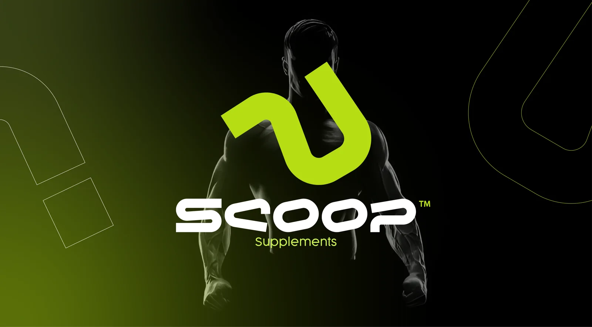
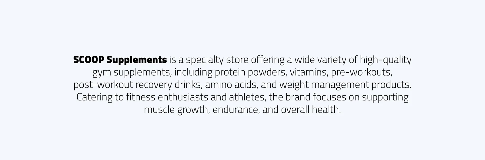
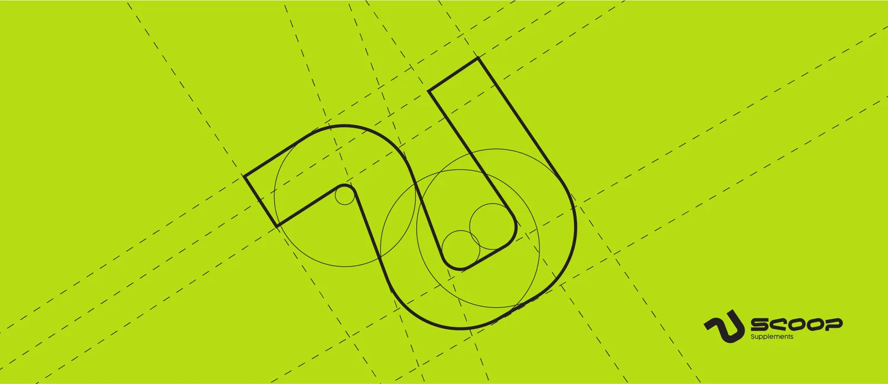
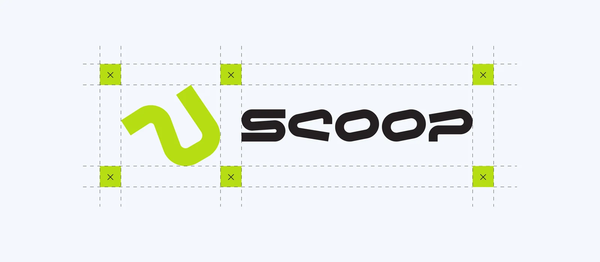
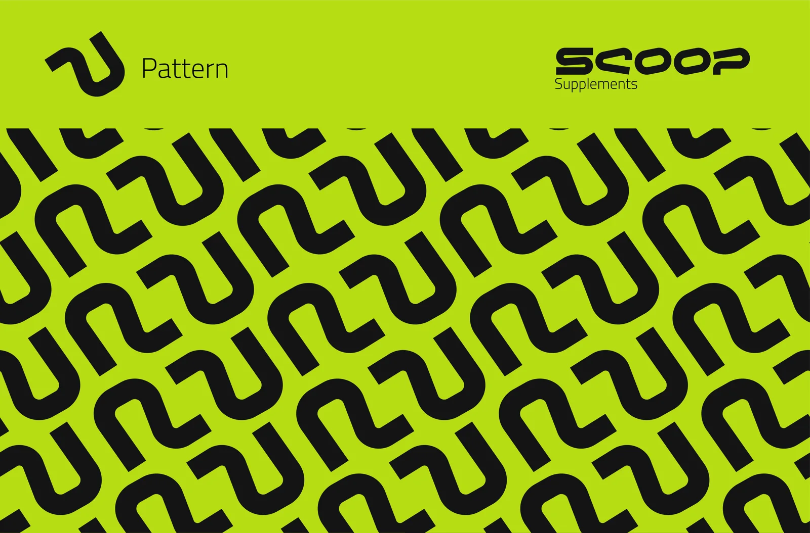
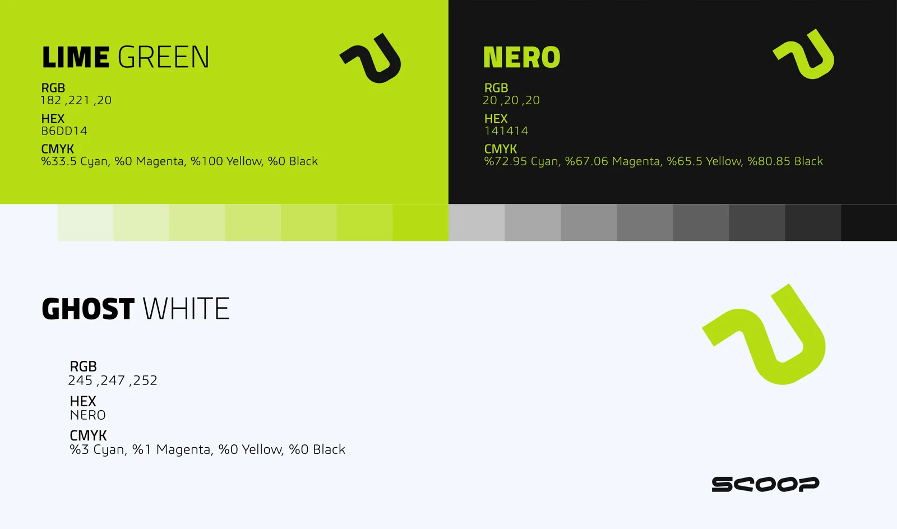
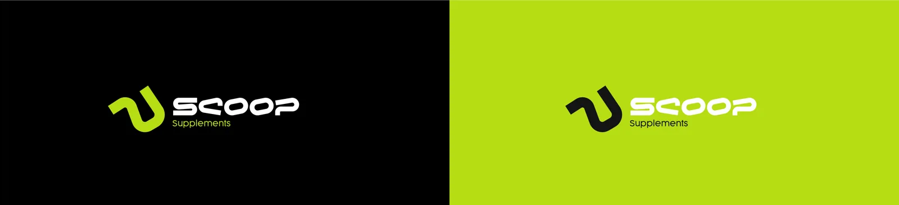
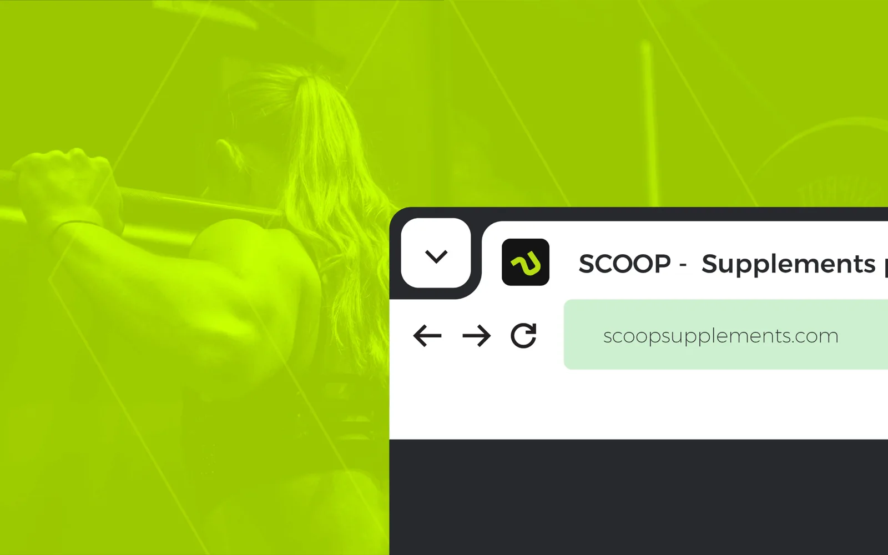
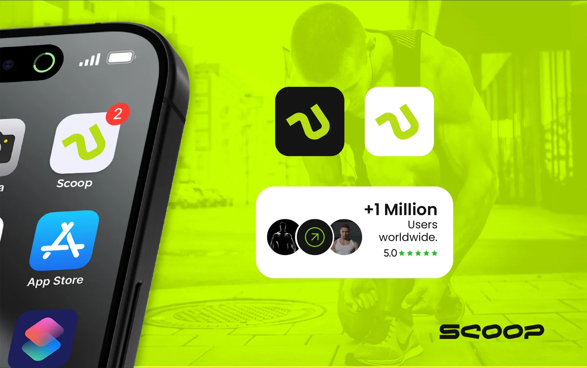
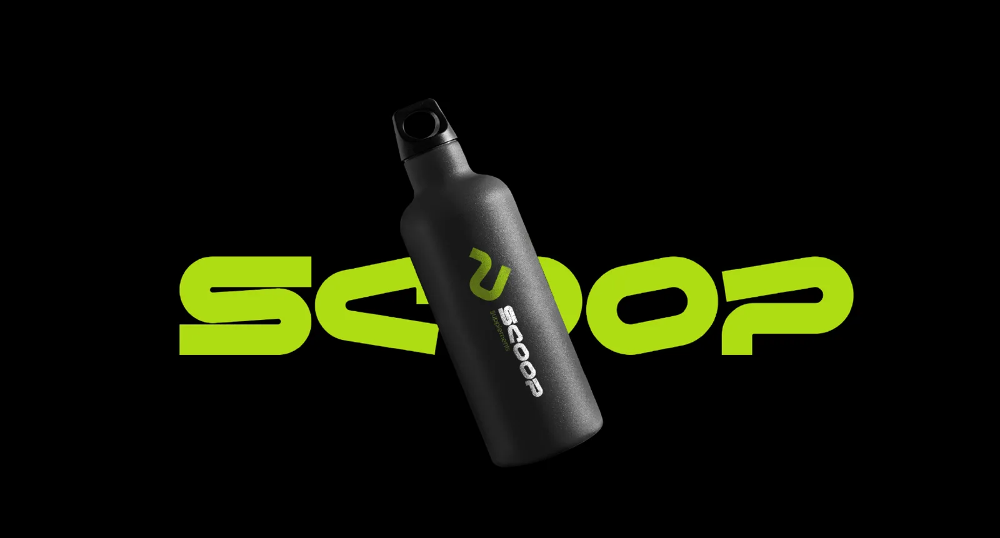
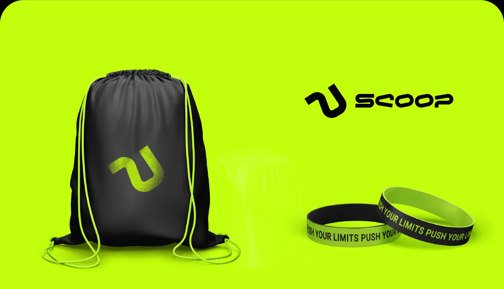
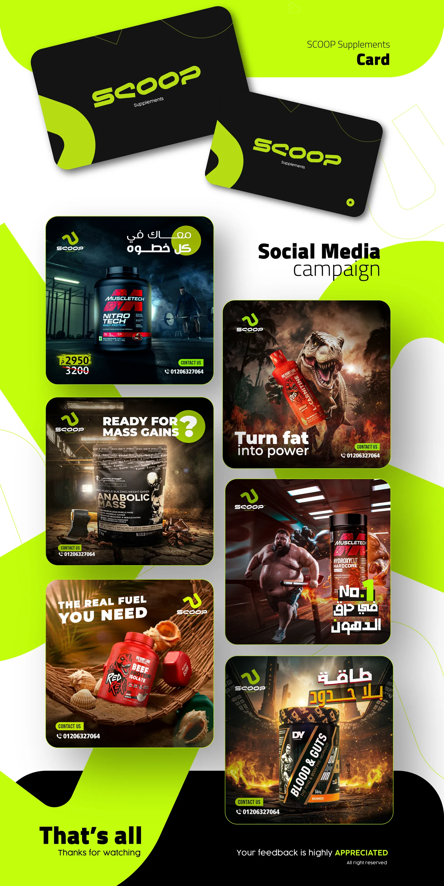
Agency >>> GLITCH Adv - Branding & SM >>> Kareem Abdelaziz - Social Media (SM) >>> Omar Ashraf
The project displayed is a branding and visual identity development for "SCOOP Supplements." The brand focuses on providing fitness and health supplements to individuals looking to enhance their well-being and physical performance. The design incorporates a modern, dynamic logo with a vibrant lime green and black color palette, reflecting energy and vitality. Key elements include a sleek, futuristic logo. The overall branding conveys strength, focus, and commitment to health, appealing to a fitness-driven audience.